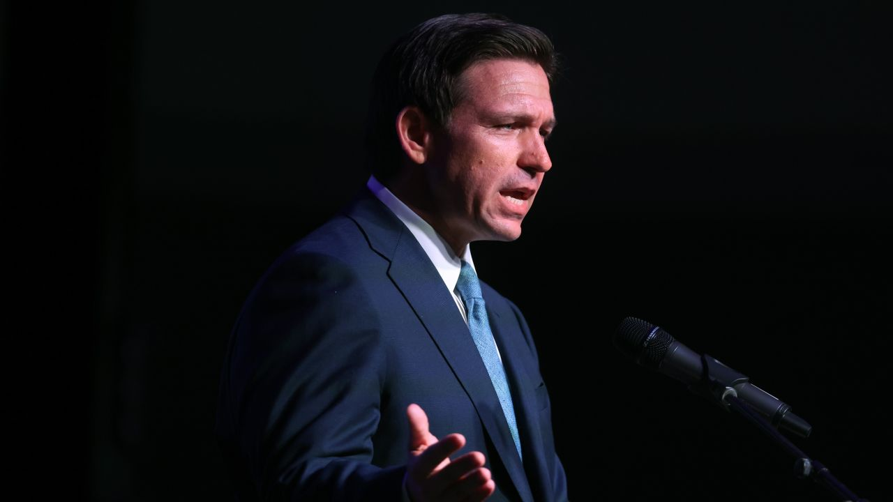
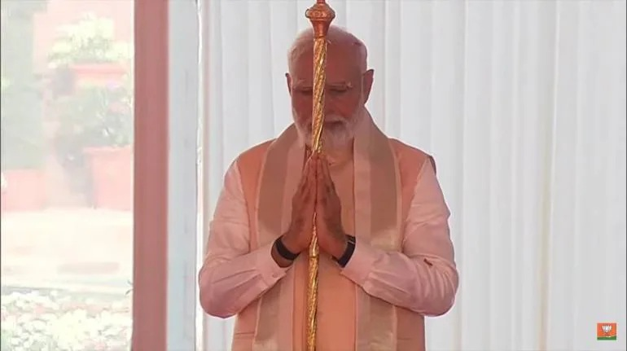

Politics
Here’s what’s in the debt ceiling deal

After several weeks of tense negotiations, President Joe Biden and House Republicans have reached an agreement in principle to raise the debt ceiling and cap spending.
The drama is by no means over. Congressional leaders in both parties have to convince enough of their members to vote for the agreement, which contains provisions that lawmakers on each side of the aisle don’t support.
Not all the details of the agreement are available yet. And the information made public Saturday evening shows some discrepancies. The bill text is scheduled to be released on Sunday.
What to expect from a Ron DeSantis presidential campaign
Florida Gov. Ron DeSantis is expected to make his presidential campaign official next week. After a solid reelection in 2022 and using Florida as a testing ground for conservative priorities, his entrance into the 2024 primary race has seemed like a foregone conclusion. While DeSantis remains the top challenger to former President Donald Trump, at least according to public opinion polls, he has slipped in some polling in recent weeks. I talked to CNN’s Steve Contorno, who is based in Florida and covers DeSantis, about what to expect from his campaign and what kind of candidate he could turn out to be.
The demographic makeup of the country’s voters continues to shift.
That creates headwinds for Republicans

Demographic change continued to chip away at the cornerstone of the Republican electoral
coalition in 2022, a new analysis of Census data has found.
White voters without a four-year college degree, the indispensable core of the modern GOP coalition, declined in 2022 as a share of both actual and eligible voters, according to a study of Census results by Michael McDonald, a University of Florida political scientist who specializes in electoral turnout.
McDonald’s finding, provided exclusively to CNN, shows that the 2022 election continued the long-term trend dating back at least to the 1970s of a sustained fall in the share of the votes cast by working-class White voters who once constituted the brawny backbone of the Democratic coalition, but have since become the absolute foundation of Republican campaign fortunes.
As non-college Whites have receded in the electorate over that long arc, non-White adults and, to a somewhat lesser extent, Whites with at least a four-year college degree, have steadily increased their influence. “This is a trend that is baked into the demographic change of the country, so [it] is likely going to accelerate over the next ten years,” says McDonald, author of the recent book “From Pandemic to Insurrection: Voting in the 2020 Presidential Election.”
PM Modi inaugurates new Parliament building, installs sengol in
Lok Sabha chamber

PM Modi installs the historic 'Sengol' near the Lok Sabha Speaker's chair in the new Parliament building
Prime Minister Narendra Modi on May 28 morning inaugurated the new Parliament building in the heart of Delhi, with the ceremony marked by the installation of the sengol, a sceptre, in the new Lok Sabha chamber next to the Speaker’s chair.
As the Congress and 19 other opposition parties, boycotted the ceremony that was televised live, Modi received the 100-year-old sengol from seers of adheenams, or maths, from Tamil Nadu and carried the sceptre to the Lok Sabha in the morning amid chants.
The opposition parties have accused the government of overlooking the Constitution and had said President Droupadi Murmu should have inaugurated the new Parliament complex.
The opposition has also questioned the government’s decision over the sengol. The government has said the sengol represents the unification of independent India with the pre-colonial era. The sengol bridges the glorious years and traditions of India's past with the future of an independent India, the government has said.
Modi, accompanied by Lok Sabha Speaker Om Birla, performed a havan and other rituals as the ceremony got underway. The Prime Minister and the Speaker also unveiled the commemorative plaque, which was followed by a multi-faith prayer.
Modi also felicitated a group of construction workers who were involved in building the new structure, which has come up adjacent to the old Parliament building.
Completed in 1927, the old Parliament is now 96 years old and has for long been deemed inadequate to meet present-day requirements.
The new Lok Sabha chamber, designed along the peacock theme, can seat 888 members, while the Rajya Sabha, built around the lotus theme, can accommodate 300 members.
For a joint sitting of the two Houses, the Lok Sabha chamber can accommodate up to 1,280 members.
Spanning four floors and designed in a distinct triangular shape, the new Parliament building is spread over 64,500 square meters. It has three main gates— Gyan Dwar, Shakti Dwar, and Karma Dwar.
For smooth access, the new complex, which is equipped with state-of-the-art technology, has separate entrances for VIPs, Members of Parliament (MPs), and visitors.
The building is also a nod to India’s diverse crafts — carpets have come from Mirzapur in Uttar Pradesh, bamboo flooring has been sourced from Tripura and stone carvings from Rajasthan.
New Parliament Building: Opposition boycott signals collective
departure from democratic values

The Opposition’s churlish boycott of the inauguration of the new Parliament
building is on very weak ground. The new Parliament building inauguration was a much needed addition to our democracy.
The Opposition’s churlish boycott of the inauguration of the new Parliament building is on very weak ground. What should have been a great moment for India’s democracy and history in the making has been sullied
Our old Parliament building was constructed about a century ago, and the Rajya Sabha and the Lok Sabha together could accommodate only 552 members. If the delimitation process is completed in 2026, the strength of Parliament should significantly outgrow its current capacity and pose an acute challenge in the conduct of business. The constraint that the old building could not be expanded adds to this challenge.
Since logic was not on their side, they raised another argument that President Droupadi Murmu was denied her constitutional right to inaugurate the new Parliament. Evidently, no constitutional provision requires the president to do such an inauguration, nor does it prevent the prime minister from doing the honours. In fact, no constitutional provision exists on Parliament inauguration at all.
It was not the British monarch King George V but Lord Irwin who had inaugurated the old Parliament building. Post-independence, it wasn’t President Fakhruddin Ali Ahmed but Prime Minister Indira Gandhi who inaugurated the Parliament annexe.
In the absence of any binding provision, arguing about the president’s non-existent constitutional right is both idiocy and denial of the Congress party’s own historical decisions while in government.